Actividades
Básquet
El básquet es el sello de la institución, hace mas de 30 años nuestro equipo profesional compite en el máximo nivel nacional. El club cuenta con categorías formativas reconocidas a nivel provincial y nacional por su alto nivel competitivo. Desde la institución se busca la formación deportiva y humana de los jugadores
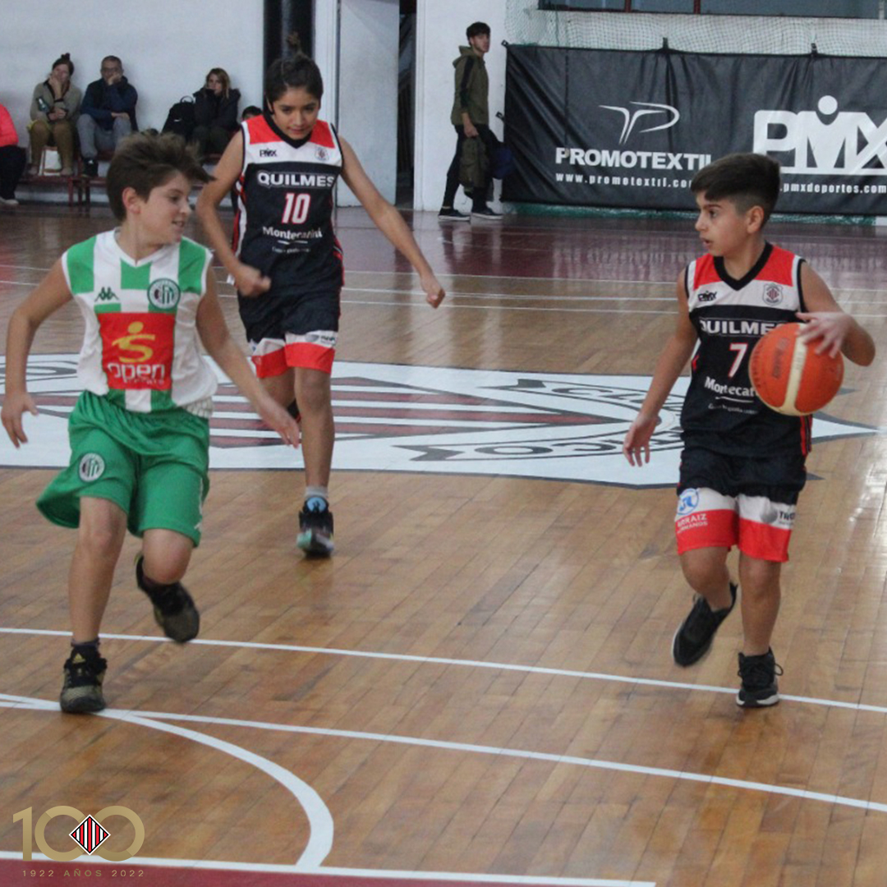 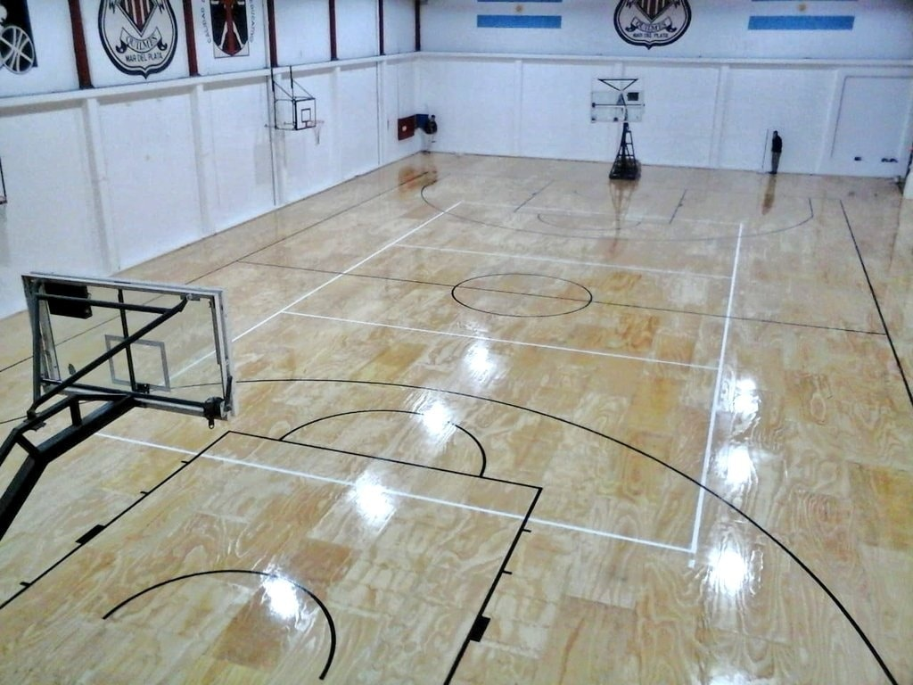 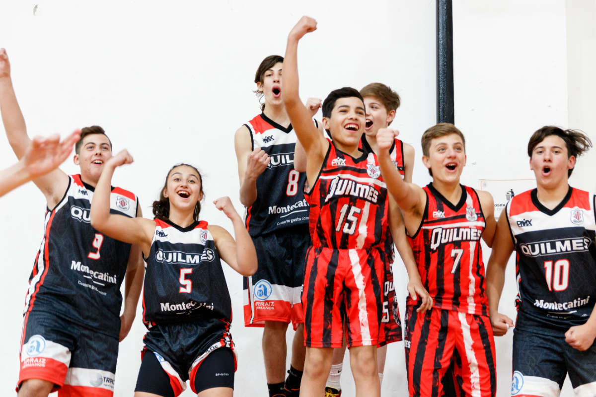Fútbol
Actualmente la institución compite a nivel local en la Liga Marplatense de Fútbol, siendo el segundo equipo mas ganador en la historia de la competición. En las categorías infantiles Quilmes busca formar a los jugadores tanto en lo deportivo como en lo humano, inculcando valores como el respeto, el trabajo en equipo y el juego limpio.
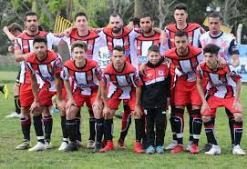 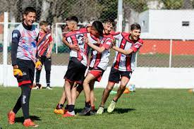Artes Marciales
Taekwondo
“Autocontrol y espíritu indomable, esos son los principios” Nacido en Corea el 11 de abril de 1955, el Taekwondo es un arte marcial que se basa en un método científico moderno que a través de sus técnicas fundamentales enseña a desarrollar el máximo poder del cuerpo. Alejandro Quadro, noveno dan, es el encargado de impartir las clases en el Club Atlético Quilmes. “La etimología de la palabra, tae significa acción de pie, kwon acción de mano y do camino”, afirmó. En este sentido, explicó los valores que inculcan desde el deporte: “Autocontrol y espíritu indomable, esos son los principios del Taekwondo. Cada persona que comienza su do, su camino. Es importante el respeto al compañero, a los más grandes, el sitio de entrenamiento”. Las clases se desarrollan los martes y jueves de 19 a 20.30, “generalmente se dividen en una parte de entrada calor que se va intensificando, lo que se llaman las formas que son las técnicas fundamentales con una frecuencia lógica y por último la parte de enfrentamiento, defensa personal y lucha completa con protectores”. Actualmente es un deporte que está en todos los países del mundo y tiene competencias desde locales hasta internacionales. Sin embargo, hay personas que optan por seguir el camino del autodescubrimiento a través del deporte sin necesidad de competir.
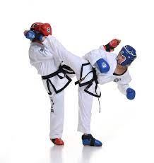 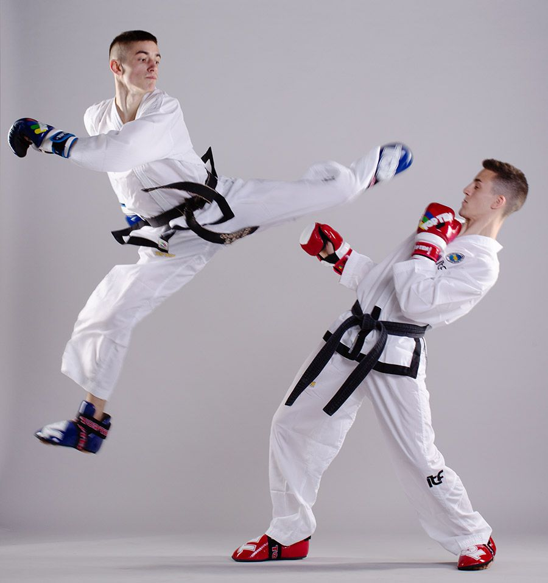
Aikido
El karate o kárate, del japonés, karate; literalmente, 'mano vacía' . Es un arte marcial tradicional basada en algunos estilos de las artes marciales chinas (wushu), y en menor medida en otras disciplinas provenientes del sureste asiático proveniente de Okinawa (Japón). El nombre japonés se compone de las palabras kara, 'vacío' y te, 'mano'. A la persona que lo practica se la llama karateca.

 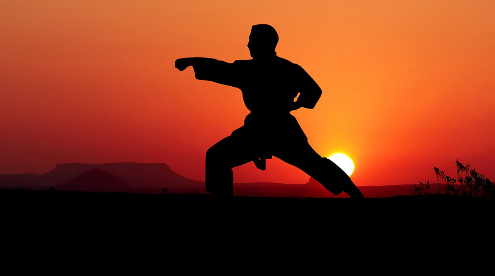
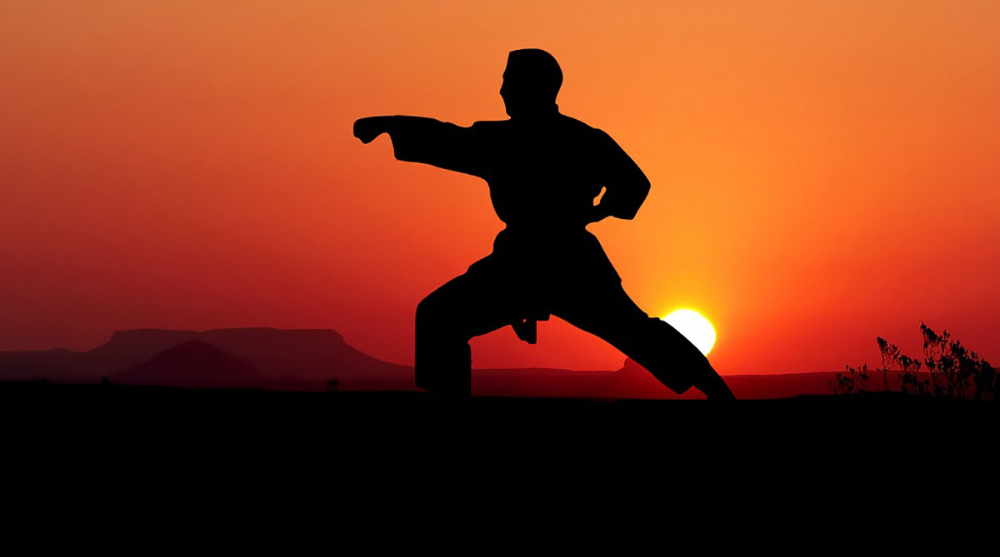
Gimnasia Artistica
La gimnasia artística es una modalidad de gimnasia que consiste en la realización de una composición coreográfica, combinando de forma simultánea y a una alta velocidad, movimientos corporales. Las características de este deporte exigen del gimnasta unas condiciones físicas excepcionales.
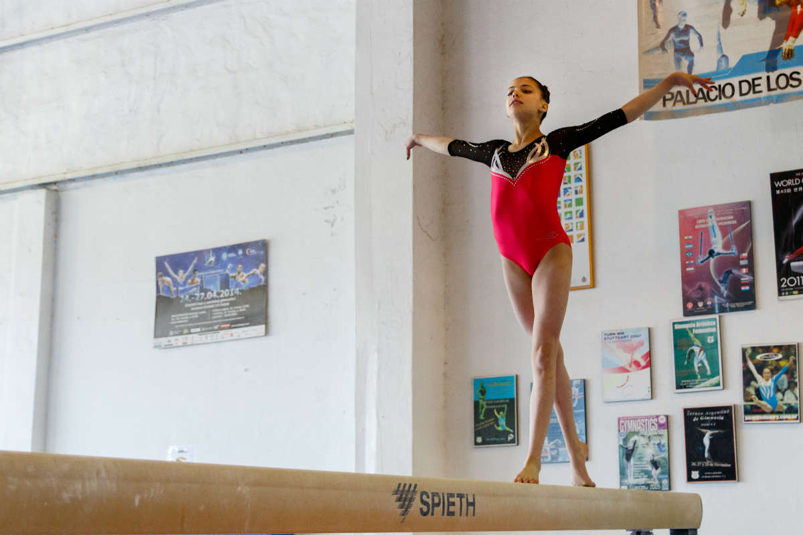 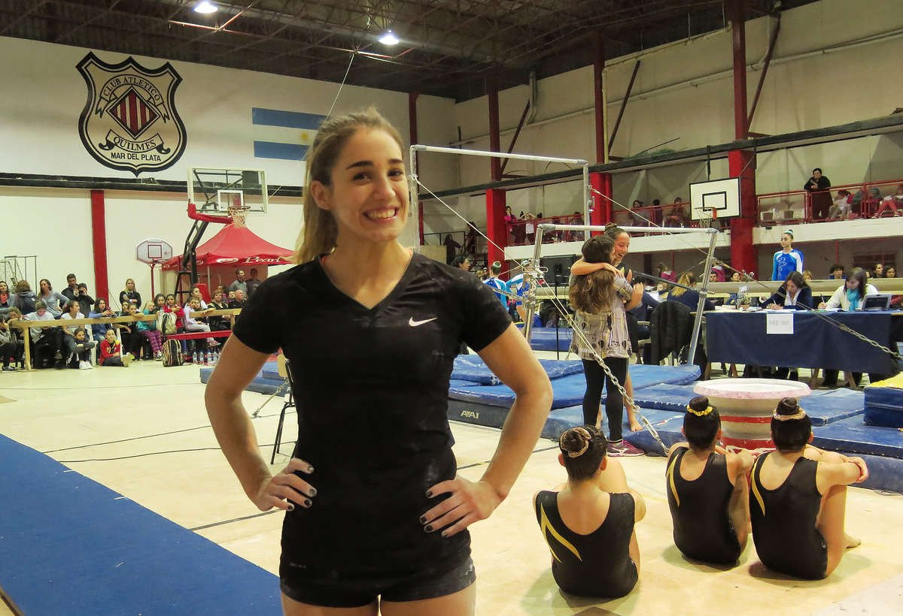 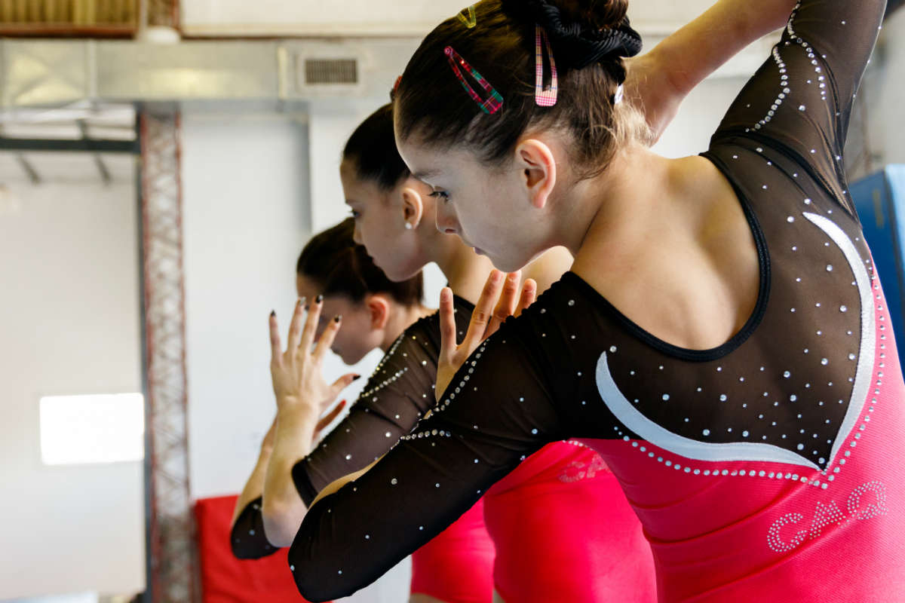